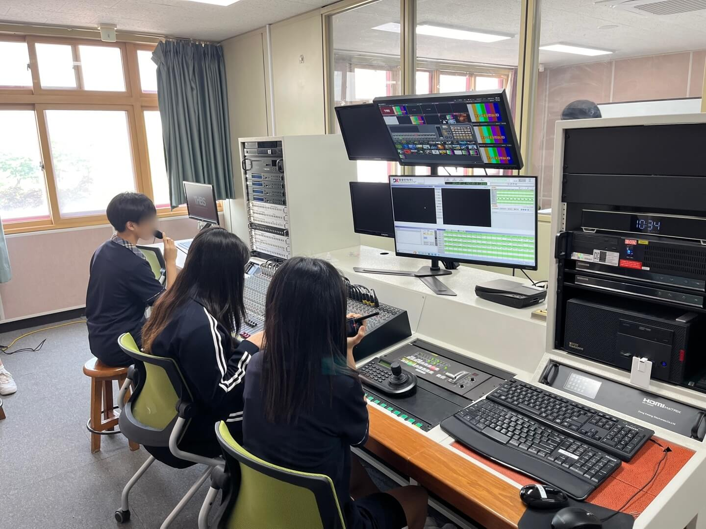
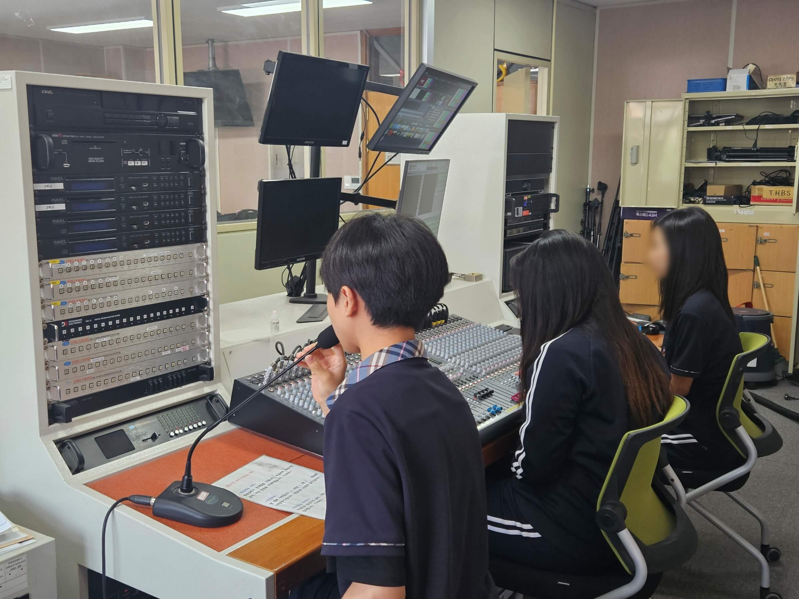

방송부 동아리
토평고등학교 방송부의 이름은 THBS(Topyeong High School Broadcasting Station)입니다. 방송부는 교내에서 방송과 관련된 다양한 활동을 합니다. 예를 들어, 체육대회나 축제 때 원활한 진행을 위해 음향 장비를 세팅하고, 활동 내용을 기록하기 위해 촬영을 합니다. 또한, 교내 타종을 관리하여 학생들의 수업에 지장이 없도록 합니다. 창체 시간에 교육 영상을 송출하고 점검하며, 영상 시청을 돕기도 합니다. 학교 홍보 영상을 제작하여 신입생들에게 토평고를 알리는 중요한 역할도 맡고 있습니다. 방송부 자체 활동으로는 학생들의 학업 스트레스를 해소하기 위해 매주 월, 수, 금 점심시간에 음악방송을 진행합니다.

